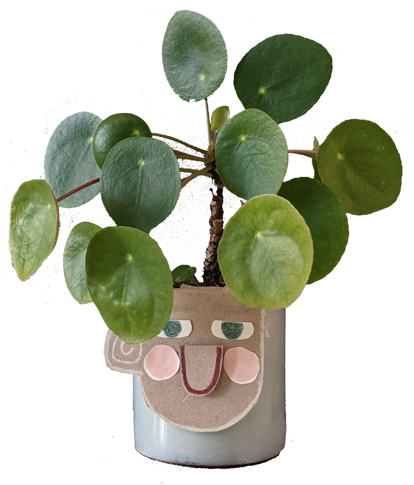
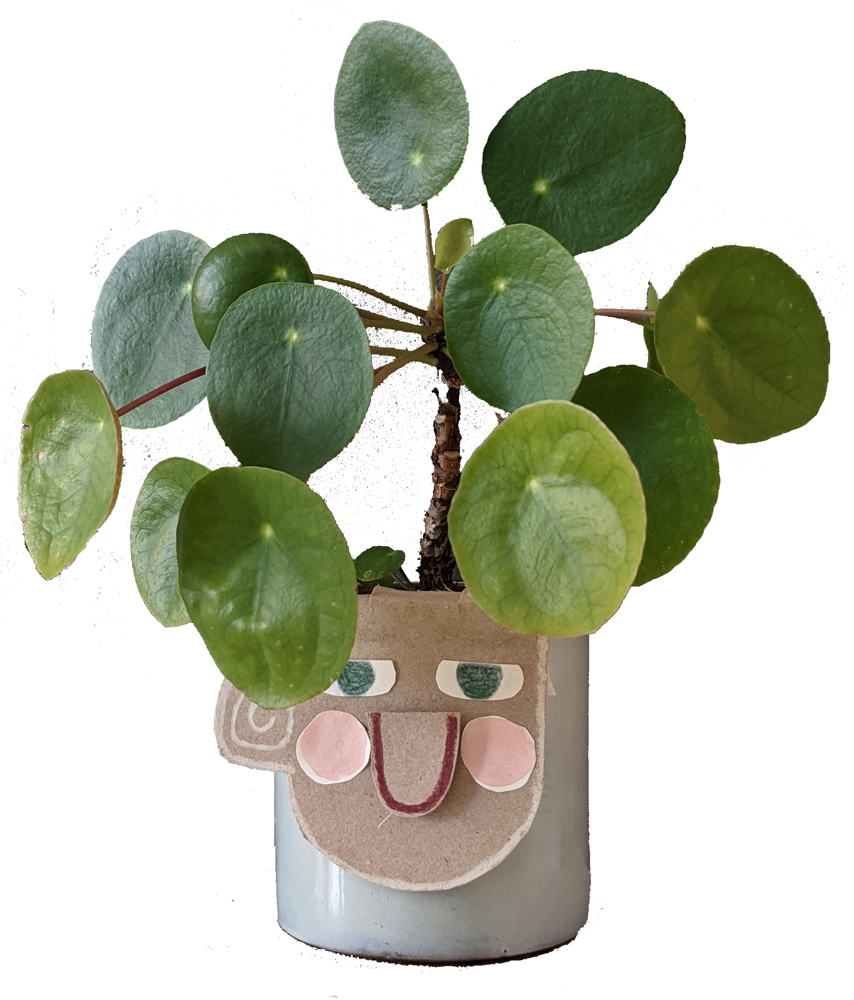
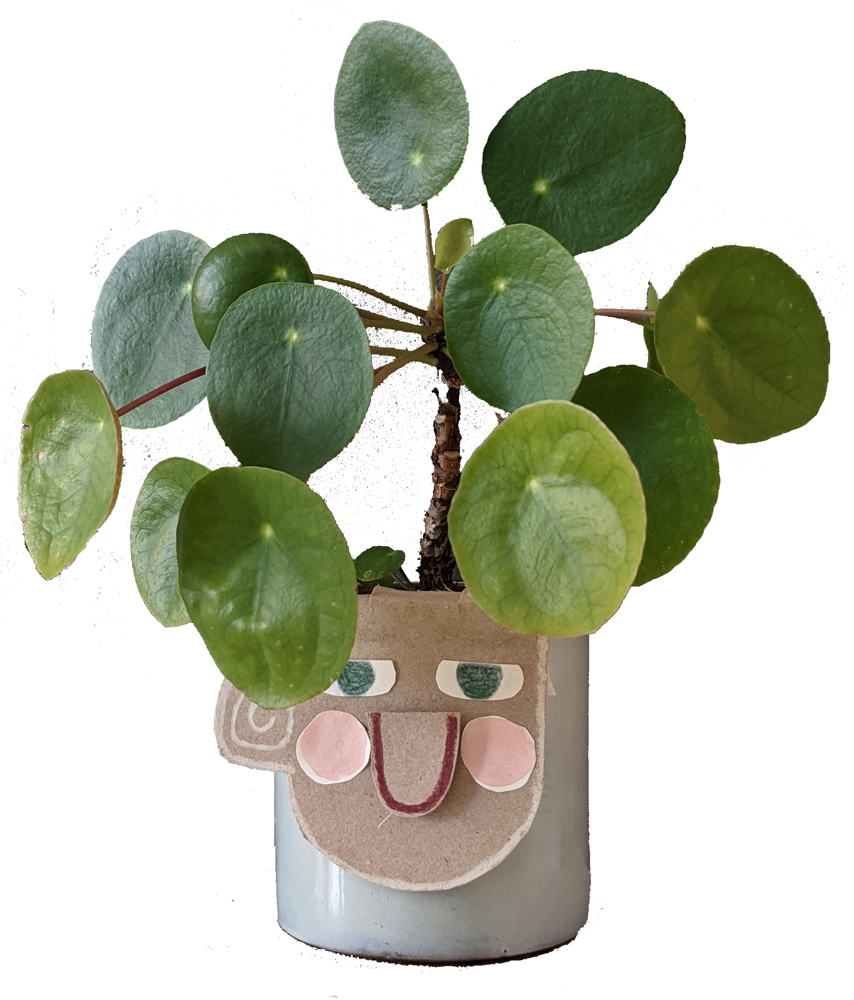

Example project title
social campaign with the domain of being grateful
I used the nudging technique to encourage people to interact with a plant in a certain way.
Section subtitle
Paragraph 2

I used the nudging technique to encourage people to interact with a plant in a certain way.
Paragraph 2